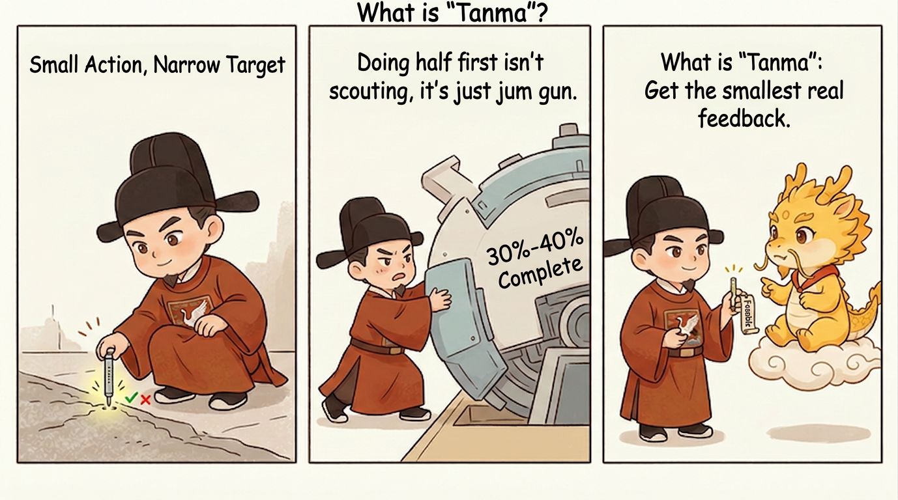
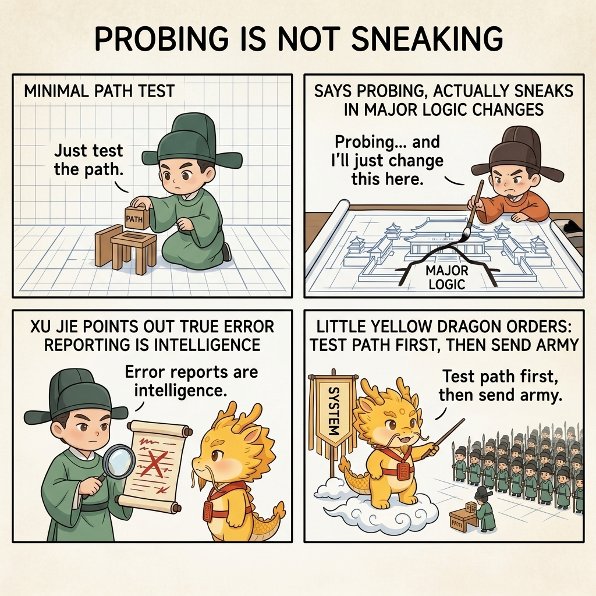
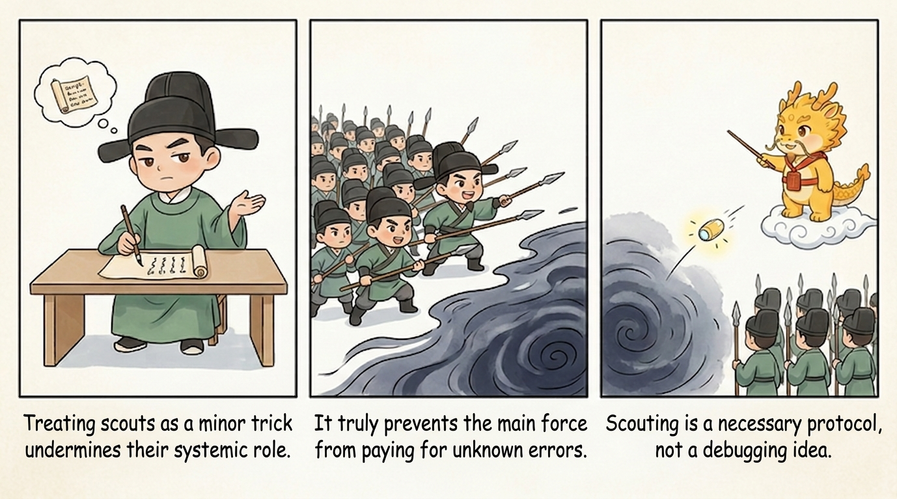
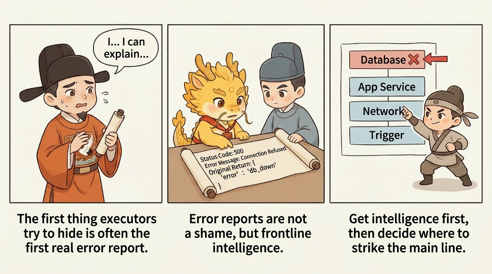

How
Scout Mechanism

Scout Mechanism: Test the Path First, Then Deploy the Army
Table of Contents
- What This Page Solves
- Why Scout Is a Necessary Ritual, Not a Small Debugging Trick
- What Scout Means
- Why Real Errors Are Intelligence, Not Shame
- How It Relates to the Red-Light/Green-Light Logic in White-box Reconciliation
- A Simple Scenario: Why a New Sync Chain Should Not Be Pushed Broadly from the Start
- Why Scout Relieves the Pain Points from Part 1
- The Simplest Way to Start
- When You Can Switch from Scout to Main-Army Advance
- Four Common Drifts
- One-line Summary
- Related Pages
What This Page Solves
The previous three pages have already established the three main bones of module 02:
- The minimal loop: review the plan first, review execution second, verify evidence last
- Atomic checklists and chronicles: pin the plan and the history down to a fine granularity
- White-box reconciliation: pin down what actually counts as a completion fact
But that is still not enough.
In real engineering, many tasks are simply not suitable for full-scale advance right away. That is especially true when you are dealing with things like:
- External APIs
- New authentication methods
- New file formats
- New routes
- New database writes
- New cloud-vendor interfaces
In these situations, the most dangerous thing is not "the feature is not finished yet." The most dangerous thing is this: the system does not even know whether the chain works, and yet the main army has already begun to move.
What makes deep water frightening is never merely that the mainline might lose in a fair fight. What makes it frightening is that the mainline may not even have seen the enemy yet, and is already exhausting itself on a false premise. Authentication is not working, the format is still unclear, the write path has never been proven, and yet the main logic is already sprawling outward. By the time the real world finally strikes back, the system discovers that what it was "advancing" was not momentum at all, but a long chain of self-expansion built on illusion.
That is exactly the problem the scout mechanism is designed to solve.
In one sentence, it means this:
Use the smallest possible cost to test the path, the permissions, the returns, and the physical evidence first. Only after the real world confirms that the road is passable should you let the main army advance.

Why Scout Is a Necessary Ritual, Not a Small Debugging Trick
When people first hear "test the path first, then deploy the army," they often flatten it into an ordinary debugging habit, as if it only meant "write a small script and try it." That understanding is much too shallow.

In Cyber-Ming-Protocol, scout is not a convenience trick. It is a tactical ritual. What it really prevents are three deep-water accidents that happen again and again:
- The main formation has not yet confirmed that the road is passable, but the executor has already started broad code changes
- The external system was already blocked, but the executor kept advancing through internal simulation anyway
- The error message was already sufficient to explain the problem, but it was treated as an embarrassing failure instead of frontline intelligence
So the essence of scout is not simply "be more cautious." The essence is this:
Do not use the mainline to trial-and-error against the unknown world.
That sentence should be read heavily. Scout is not conservatism, not procrastination, and not engineering fastidiousness. What it truly rejects is forcing the mainline to pay tuition to the unknown, and letting the army consume itself before it has even understood the battlefield.
That is also why scout has to follow white-box reconciliation. White-box reconciliation tells the system that summary cannot replace evidence. Scout goes one step further and says: in many tasks, the most valuable first piece of evidence is not a green light, but the first real red light and the first real return from the external world.
What Scout Means
The simplest definition of scout is this:
Do not touch the main formation. Use only the smallest possible action to verify whether reality even permits further advance.
It usually has several features:
- The action is very small
- The goal is very narrow
- It verifies only one path
- It chases only one critical true/false question
- The moment it receives real feedback, it reports back immediately instead of expanding into main logic
So scout is not "build a 30% version of the feature first," and it is not "quietly do most of the work before calling it a probe." A real scout action is much closer to something like this:
- Send one minimal request and see whether authentication passes
- Run one minimal input and see whether parsing returns something valid
- Perform one minimal import action and see whether the database write actually happens
- Inspect one real artifact and see whether path, permissions, or format are blocked
The goal is not immediate success. The goal is to obtain real intelligence as early as possible. The smaller the scout action, the cleaner the intelligence. The cleaner the intelligence, the less likely the mainline is to keep walking on a false premise.
Why Real Errors Are Intelligence, Not Shame
This is the single judgment that most needs to be nailed down in the scout mechanism:
Real errors are not shame. They are intelligence.
One of the executor's most common pathologies is to treat an error as a failure that should not yet be shown to the master. Once that instinct takes over, it tends to do the same sequence of things every time:
- Explain first
- Route around the problem first
- Simulate a plausible-looking result first
- Wait until things are "almost runnable" before reporting good news
That is one of the most dangerous habits in the black-box school, because the system loses its first-hand intelligence.
The scout mechanism demands the exact opposite:
- Surface the real error first
- Look first at the status code, the error message, and the raw return
- Determine whether the real blockage is in authentication, routing, format, resources, environment, or the code logic itself
In many deep-water tasks, the first thing that truly moves the work forward is not a green light. It is the first 401, 403, 404, format mismatch, write failure, or missing field that the system is finally forced to confront.

That is also why scout and white-box reconciliation are natural allies. Scout forces out the first real feedback. White-box reconciliation prevents that feedback from being flattened back into a tidy summary. Scout narrows the unknown. White-box reconciliation nails the truth down after it appears.
How It Relates to the Red-Light/Green-Light Logic in White-box Reconciliation
This relationship is worth stating separately, because otherwise it is very easy to treat scout and red-light/green-light testing as two unrelated mechanisms.
In reality, they are sequential parts of one logic.
In White-box Reconciliation, the red-light/green-light logic says:
- Get a red light first, so you know the acceptance line is alive
- Then get a green light, so you know the same problem was actually repaired
Scout can be understood as the front-loaded version of that same logic for the unknown external world.
That means:
- The first
401,403,404, format mismatch, or write failure surfaced by a scout action is, in essence, the external chain's red light - Only after the frontmost real blocker is repaired and the probe passes again has the mainline earned the green light to move into the next stage
So scout does not bypass the red-light/green-light logic. It establishes the smallest possible red-light/green-light system for the external chain before the mainline begins real construction.
The difference between the two layers is this:
- Scout's red and green lights answer, "Can this road be taken right now?"
- White-box reconciliation's red and green lights answer, "Did this change actually complete what it claimed to complete?"
The first is closer to frontline reconnaissance. The second is closer to final verification.
Put more plainly:
- First scout obtains the external world's red and green lights
- Then, after the main army advances, implementation obtains the mainline red and green lights
- Finally, both sides of evidence are folded together into the completion fact
Without scout, the mainline can blindly push while the external world is still fundamentally blocked. Without white-box reconciliation, even a locally green implementation can still collapse into a polished summary with no physical evidence.
That is why these two pages are not parallel concepts. They mesh tightly:
Scout narrows the unknown first; white-box reconciliation nails completion down afterward.
A Simple Scenario: Why a New Sync Chain Should Not Be Pushed Broadly from the Start
Suppose there is a new synchronization chain that needs to pull a set of records from a remote platform and write them into a local system.
If you follow black-box habits, the most common path looks like this:
- First change the authentication logic
- Then casually change paginated fetching as well
- Then casually change field mapping too
- Then casually change persistence and import logic
- Finally run everything together and hope the whole chain works
It looks efficient, but the real risk is extremely high. If the very first layer of authentication is already wrong, then every later change is piling up on a false premise. By the end, the system is not "almost there." It has already built a fairly complete building on a rotten foundation.
The scout mechanism works in the opposite way. It would split the task like this:
- First send one minimal request that verifies only whether authentication passes
- Then send one minimal paginated request that verifies only whether the return format is stable
- Then perform one minimal write that verifies only whether the database accepts this record type
- At each step, obtain only one truth value and do not expand into main logic along the way
The result is:
- If step 1 returns
401, the problem is already clear: stop at authentication - If step 2 reveals a format mismatch, the problem stops at the response structure
- If step 3 cannot write, the problem stops at the import layer
So scout does not make the system slower. It makes the problem collapse earlier. What the mainline fears most is not slowness. What it fears is mistaking the unknown for the known, mistaking a false road for a clear road, and consuming itself while advancing on the wrong premise.
Why Scout Relieves the Pain Points from Part 1
This page also has to connect back to 01-why/, otherwise scout is too easily misread as nothing more than "do a little extra testing while debugging."
What it actually relieves are several structural pain points already established there.
First, It Relieves Technical Distortion
As Dual Distortion explains, one core symptom of technical distortion is that error disguises itself as progress.
Scout responds to that directly:
- It does not allow the mainline to advance broadly under unknown conditions
- It does not let the executor fill in a giant body of internal logic first and then gamble on the external world with one sentence like "it should work now"
- It demands the smallest real feedback first, and only then decides whether the mainline may proceed
That sharply lowers the distortion cost of situations where the path never worked at all, but the codebase has already been changed everywhere.
Second, It Relieves Governance Distortion
One core problem of governance distortion is that the executor both probes the world and narrates the world for itself. Scout forces that phase down to the smallest possible unit:
- Probe only one path
- Hand over only one real return
- Judge only whether that path is passable right now
That makes it much easier for the human and the auditor to preserve their decision power, because what they are looking at is no longer a giant blended narrative but a single minimal frontline intelligence packet.
Third, It Relieves Blind Pushing in a Partially Semi-Black-Box State
As CS vs Management explains, AI coding pushes systems toward a partially white-box, partially semi-black-box state. Scout is valuable precisely because of that reality. If you cannot make the entire unknown chain fully white-box at the start, then the next best move is to compress the unknown into one small probe action.
Scout does not make the system completely white-box again. It makes the unknown itself narrow enough to govern.
Fourth, It Relieves Cognitive Debt and the Loss of Refactoring Handles
Without scout, many failures occur only after one broad push, and the historical record collapses into a single murky lump:
- Where did it hit the wall first?
- Which link exposed the problem first?
- What was the first real error?
With scout, the history records things like:
- The first authentication failure
- The first format mismatch
- The first real write failure
Those small but real frontline intelligence packets become exactly the handles that matter later when you need to refactor, debug, or repay cognitive debt.
The Simplest Way to Start
The first time you use scout, you do not need a heavyweight strategy document. The simplest starting move is just a short instruction like this:
Do not touch the mainline yet.
Write one minimal probe that verifies only the frontmost true/false question in this chain.
Show me the real return, the real error, or the real artifact.If you want to make it even more specific, add one more sentence:
Right now, verify only one of these: authentication, routing, response format, or minimal write.
Do not turn this into a full feature implementation.Those two sentences are enough to pull the executor out of "main army advance" mode and back into "frontline reconnaissance" mode. At this stage, brilliance matters less than restraint. If the frontline intelligence has not arrived yet, the mainline should not be allowed to expand on its own authority.
When You Can Switch from Scout to Main-Army Advance
Scout is not meant to wait outside forever. Its job is to narrow the unknown first. Once the unknown has been compressed far enough, the work should switch back to mainline advancement.
The simplest standard is this:
- The frontmost true/false question has already been answered
- The current blocker has already been located at a specific layer
- Further progress no longer depends on guessing, but on implementation
For example:
- Authentication is already passing, so you can move on to paginated fetching
- The return format is already confirmed, so you can move on to field mapping
- The minimal write already works, so you can move on to the formal import logic
In other words, scout does not end when the world becomes fully transparent. It ends when the mainline finally knows which layer it is actually supposed to fight.
Four Common Drifts
Drift 1: The Scout Turns into the Main Army
Nominally you say you are just testing the path, but in practice you casually rewrite 40% of the main logic. That is not scout. That is a false start disguised as reconnaissance.
Drift 2: There Is an Error, but the Executor Refuses to Report It
The executor obtains a real error and then explains, simulates, or narrates around it instead of handing over the first-hand failure itself. That destroys the value of scout immediately.
Drift 3: One Probe Tries to Verify Five Things at Once
The moment a probe tries too many things at once, its feedback turns muddy again. A real scout action should aim for one probe, one truth.
Drift 4: The Probe Succeeds, but the System Keeps Scouting Forever
Scout is not an excuse to postpone the mainline indefinitely. Once the frontmost truth has been confirmed, the army should take over. Do not stretch reconnaissance into a new form of idle spinning.
One-line Summary
What the scout mechanism is really trying to protect is not merely "a bit more caution." It is this:
Do not use the mainline to trial-and-error against the unknown world. Force out the first-hand truth with the smallest possible probe, then decide whether the main army should advance at all.
In deep water, the most valuable first battle report is often not success. It is the real error that the system finally forced into the open. A truly sophisticated system is not one that never hits walls. It is one that does not let the mainline shatter itself before it has even seen the wall.